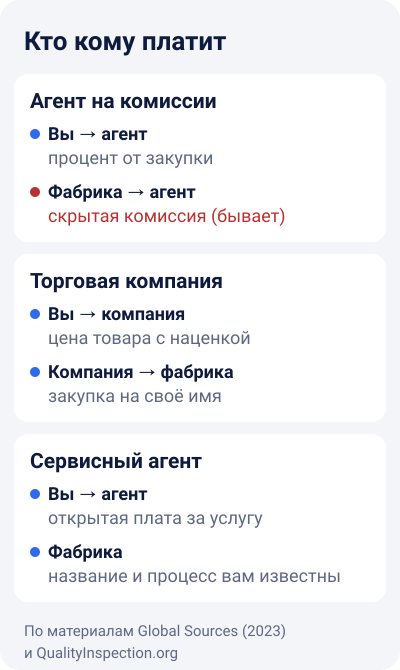
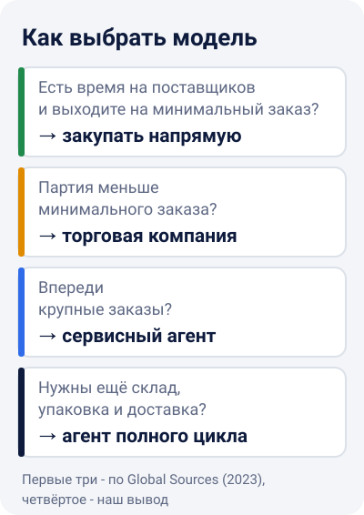

Байер, посредник или агент в Китае: чем отличаются и как выбрать
Байера, посредника и агента в Китае часто считают одним и тем же, хотя за ними стоят разные модели работы. Кто перед вами, видно по трём вопросам: кто платит посреднику, видите ли вы фабрику и на чьё имя оформлена покупка. Например, торговая компания покупает товар на своё имя и перепродаёт его вам с наценкой2.
Ниже разберём три модели посредника и то, как каждая из них зарабатывает. Потом - какой договор подписать и что спросить до первой оплаты.
Кто такой байер в Китае
Байер (от английского buyer, покупатель) - разговорное слово, а не вид договора. Байером могут назвать и частного закупщика, и агента, и менеджера торговой компании. Поэтому смотрите на то, как человек или компания работает с вашими деньгами и с фабрикой.
Первый вопрос - нужен ли посредник вообще. Если ваша команда не может тратить 1-3 часа в день на каждого поставщика, чтобы следить за происходящим в Китае, может понадобиться помощь посредника1. Если время есть и ваш объём дотягивает до минимального заказа фабрики, закупка напрямую, скорее всего, лучший вариант1.
Три модели посредника в Китае
Агент на комиссии. Помогает найти поставщиков, наладить общение и следить за производством. Обычно это частное лицо, которое живёт в стране производства2. Если агент из вашей отрасли, вы экономите время за счёт его связей, и он может представлять вас в Китае1. Главный риск - скрытая комиссия от фабрики. Рено Анжоран, который с 2006 года руководит компанией по контролю качества, пишет, что её получает большинство таких агентов1. Из-за этого, когда что-то идёт не так, агент нередко встаёт на сторону фабрики1.
Торговая компания. Покупает товар на своё имя и перепродаёт с наценкой, всё общение идёт через неё2. Это хороший вариант, если ваша партия меньше минимального заказа фабрики: торговая компания может разместить заказ в небольшом цехе, который берёт маленькие партии1.
Сервисный агент. Берёт плату за услугу и работает открыто: вы знаете названия поставщиков и видите процесс1. До начала производства это вложение, зато вариант хорош, если впереди крупные заказы1. Лучшие такие агенты работают как ваш закупочный отдел1. Учтите, что сам Анжоран руководит компанией по контролю качества1, то есть работает на том же рынке.
| Модель | Фабрика видна | Как зарабатывает |
|---|---|---|
| Агент на комиссии | зависит | процент от закупки, иногда ещё скрытая комиссия от фабрики |
| Торговая компания | обычно нет | наценка в цене товара, всё общение через неё |
| Сервисный агент | да | открытая плата за услугу, поставщики и процесс известны |
| Закупка напрямую | да | посредника нет |

Отдельно стоит агент полного цикла: к поиску, закупке и контролю он добавляет склад, упаковку и доставку. Так работаем и мы. Если нужен один подрядчик на весь путь товара, оставьте заявку.
Сколько берёт посредник и кто ему платит
Посредник может зарабатывать четырьмя способами, и они легко сочетаются:
- Процент от закупки. По данным статьи 2011 года, агенты обычно получали 5-10% от стоимости товара на условиях FOB после финальной оплаты2. FOB - одно из правил Incoterms 2020 для морской перевозки; в нём указывают порт погрузки6. Цифра старая: сегодня ставку обсуждают с каждым посредником отдельно.
- Наценка в цене. Так работает торговая компания2. Её доход уже заложен в цену товара, отдельно вы его не видите.
- Фиксированная плата за услугу. Так работает сервисный агент1.
- Комиссия от фабрики. Её платит фабрика, и покупатель о ней может даже не знать1.
Поэтому первым делом спросите посредника, как и кто ему платит1. Размер ставки - уже следующий вопрос. Если часть дохода посредник получает от фабрики, при споре о браке или сроках его интересы могут разойтись с вашими.
Какой договор подписать с посредником
Если договор с посредником подчиняется российскому праву, его можно оформить по одной из трёх глав Гражданского кодекса. Главное различие - от чьего имени посредник покупает у фабрики:
- Договор поручения. Посредник действует от вашего имени и за ваш счёт, права и обязанности по сделке возникают сразу у вас3.
- Договор комиссии. Посредник заключает сделку от своего имени, но за ваш счёт. Права и обязанности по такой сделке приобретает он4.
- Агентский договор. Агент действует за ваш счёт, но может работать как от своего имени, так и от вашего5. Какой вариант выбран, лучше прямо записать в договоре.
По правилам ГК РФ, если посредник покупает от своего имени, права по сделке с фабрикой приобретает сам посредник, у вас по этой сделке они не возникают4. Но контракт с китайской фабрикой может подчиняться другому праву. Можете ли вы сами предъявить требования фабрике, зависит от этого контракта и договора с посредником. Уточните это у юриста до подписания.
Что спросить посредника до первой оплаты
Большую часть вопросов мы взяли из списка Рено Анжорана для выбора агента1, первые два добавили сами - они следуют из раздела о договоре:
- На чьё имя будет контракт с фабрикой и от чьего имени вы ей платите?
- Буду ли я знать название фабрики?
- Как и кто вам платит? Получаете ли вы что-то от фабрики?
- Смогу ли я приехать на фабрику до или во время производства?
- Можно ли поговорить с вашими клиентами, которые покупают похожий товар?
- Кто проверяет качество - вы сами или сторонняя компания? Будет ли отчёт после каждой проверки?
- Будете ли вы каждую неделю сообщать, как идёт производство?
- Что вы сделаете, если поставщик обманет, сорвёт срок или пришлёт брак?
- Работаете ли вы в том регионе, где делают мой товар?
- Станет ли ваша услуга дешевле на повторных заказах того же товара?
Как устроена проверка партии перед отгрузкой и что должно быть в отчёте, мы разбирали в статье о проверке качества товара в Китае.

Как работает FBL Group
Мы - ваш представитель и партнёр в Китае: поиск, закупка, производство, контроль, склад, фулфилмент и доставка. Офис у нас в Фошане, с поставщиками работаем также в Гуанчжоу и Иу. Подробнее о нас - на странице о компании.
Приёмку, проверку, маркировку и упаковку на складе мы описали на странице фулфилмента. Почему груз может задержаться и как заложить запас по срокам, разобрано в статье о задержках груза из Китая.
Коротко
- Байер - разговорное слово. Смотрите на модель: агент на комиссии, торговая компания или сервисный агент.
- Спросите, как и кто платит посреднику, и не берёт ли он деньги у фабрики.
- Узнайте, на чьё имя контракт с фабрикой и по какому праву он заключён, и запишите это в договор с посредником.
- Партия меньше минимального заказа фабрики - это к торговой компании; если впереди крупные заказы - к сервисному агенту.
- Если нужны ещё склад, упаковка и доставка, выбирайте агента полного цикла.
Чтобы обсудить закупку, контроль и доставку вашего товара, оставьте заявку.
*Статья носит информационный характер и не является юридической консультацией. Условия работы с посредником определяет ваш договор с ним.*
Источники
- Global Sources, Рено Анжоран. Sourcing from China 101, part 1: Do you need a sourcing agent? — обновлено 1 декабря 2023 (на английском).
- QualityInspection.org, Рено Анжоран. Agent vs. trader vs. importer: what differences? — 29 марта 2011 (на английском).
- Гражданский кодекс РФ, часть вторая. Статья 971. Договор поручения.
- Гражданский кодекс РФ, часть вторая. Статья 990. Договор комиссии.
- Гражданский кодекс РФ, часть вторая. Статья 1005. Агентский договор.
- International Trade Administration (США). Know Your Incoterms — правила Incoterms 2020 (на английском).
Ссылки проверены 20 ноября 2026. Статья — общие рекомендации, а не юридическая консультация.